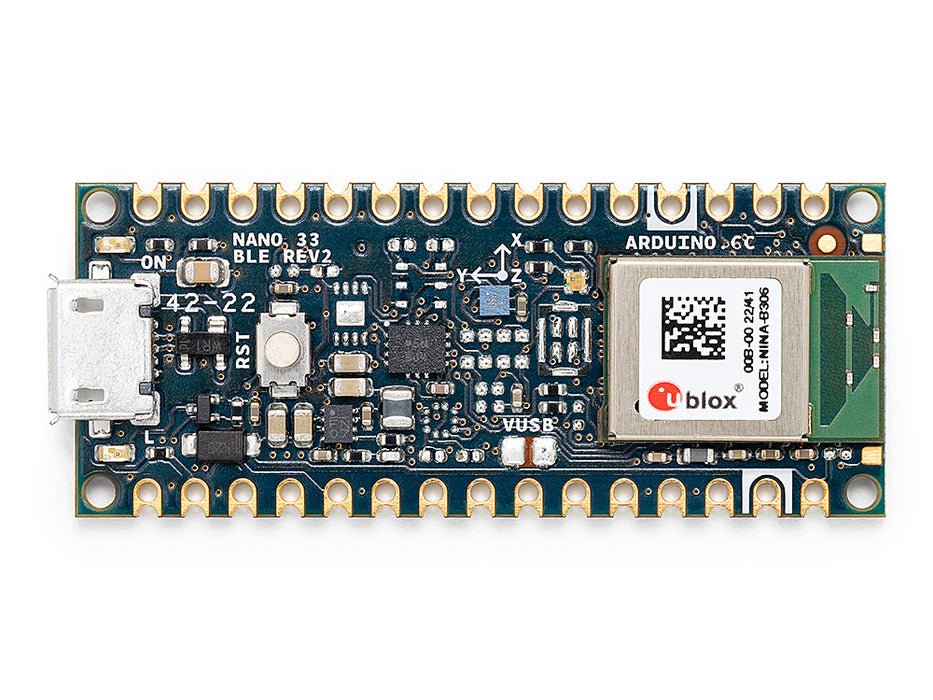

Arduino Nano 33 BLE Sense¶
Предупреждение
Эта плата больше не поддерживается. Последний выпуск прошивки OpenMV для Arduino Nano 33 BLE Sense — 4.7.0. Дальнейшие обновления прошивки, исправления ошибок или новые функции для этой платформы выпускаться не будут. Приведённая ниже информация сохранена для пользователей версии 4.7.0 и более ранних.
Arduino Nano 33 BLE Sense — это плата размером 45 × 18 мм в форм-факторе Arduino Nano, построенная на базе Nordic Semiconductor nRF52840 — одного ARM Cortex-M4 с FPU, работающего на частоте 64 МГц, с 256 КБ внутренней SRAM и 1 МБ внутренней флеш-памяти. BLE обеспечивается встроенным в кристалл радиомодулем, а на плате установлены 9-осевой IMU, барометр LPS22HB, датчик температуры/влажности HTS221 / HS3003, датчик внешней освещённости / цвета / приближения / жестов APDS9960 и PDM-микрофон MP34DT05. Прошивка OpenMV управляет всеми этими устройствами из MicroPython.
{kind=link}

Полное техническое описание, фотографии и размеры см. на странице продукта Arduino Nano 33 BLE Rev2.
Основные характеристики¶
Nordic nRF52840 Cortex-M4 с FPU на частоте 64 МГц с 256 КБ внутренней SRAM и 1 МБ внутренней флеш-памяти.
Bluetooth LE 5.0 через встроенный в кристалл радиомодуль и Nordic SoftDevice s140.
9-осевой IMU —
LSM9DS1на Rev 1,BMI270+BMM150на Rev 2. Встроенный драйверimuопрашивает оба варианта при загрузке.Барометр
LPS22HB, датчик температуры и влажностиHTS221/HS3003, датчик внешней освещённости / цвета / приближения / жестовAPDS9960и PDM-микрофон MP34DT05.Разъём Micro USB для питания, программирования и CDC REPL.
22 пользовательских вывода I/O на стандартных разъёмах Nano —
TX/RX,D2–D13(цифровые),A0–A7(аналоговые).
Распиновка¶

Справочник по выводам¶
Имя вывода |
Опорное напряжение |
Функция |
|---|---|---|
TX |
3.3 В |
UART1 TX |
RX |
3.3 В |
UART1 RX |
D2 |
3.3 В |
PWM |
D3 |
3.3 В |
PWM |
D4 |
3.3 В |
PWM |
D5 |
3.3 В |
PWM |
D6 |
3.3 В |
PWM |
D7 |
3.3 В |
PWM |
D8 |
3.3 В |
PWM |
D9 |
3.3 В |
PWM |
D10 |
3.3 В |
PWM |
D11 |
3.3 В |
PWM / SPI0 MOSI |
D12 |
3.3 В |
PWM / SPI0 MISO |
D13 |
3.3 В |
PWM / SPI0 SCK |
A0 |
3.3 В |
ADC / PWM |
A1 |
3.3 В |
ADC / PWM |
A2 |
3.3 В |
ADC / PWM |
A3 |
3.3 В |
ADC / PWM |
A4 / I2C_SDA |
3.3 В |
ADC / PWM / I2C0 SDA |
A5 / I2C_SCL |
3.3 В |
ADC / PWM / I2C0 SCL |
A6 |
3.3 В |
ADC / PWM |
A7 |
3.3 В |
ADC / PWM |
RESET |
3.3 В |
нажмите кнопку RESET на плате или притяните к GND для сброса |
LED_BUILTIN |
— |
Оранжевый пользовательский светодиод на |
LED_RED |
— |
Красный канал RGB-светодиода (активный низкий уровень) |
LED_GREEN |
— |
Зелёный канал RGB-светодиода (активный низкий уровень) |
LED_BLUE |
— |
Синий канал RGB-светодиода (активный низкий уровень) |
Предупреждение
Выводы I/O платы Nano 33 BLE Sense рассчитаны только на 3.3 В — они не толерантны к 5 В. Подача 5 В на них повредит nRF52840.
Выводы питания¶
VIN — вход 4.5 – 21 В. Питает плату через бортовой стабилизатор. Также подаётся через диод с шины USB 5 В, поэтому USB и
VINмогут присутствовать одновременно, не воздействуя друг на друга.+5V — по умолчанию не подключён.
+3V3 — выход стабилизатора 3.3 В.
AREF — вывод аналогового опорного напряжения. На этой плате не подключён к nRF52840 — ADC всегда привязан к опорному напряжению 3.3 В.
GND — общая земля.
Nano 33 BLE Sense может питаться по любому из путей:
Micro USB — подаёт 5 В на бортовой стабилизатор.
Вывод VIN — подайте стабилизированное питание 4.5 – 21 В.
Примечание
Паяльная перемычка на нижней стороне платы с маркировкой VUSB соединяет +5V с шиной USB 5 В. Замкните её, чтобы вывод разъёма +5V действительно нёс 5 В.
Примечание
Нормально замкнутую паяльную перемычку на выходе бортового импульсного стабилизатора 4.5–21 В можно перерезать, чтобы отключить стабилизатор, после чего плату можно питать напрямую от внешнего источника 3.3 В через +3V3.
Выводы восстановления и отладки¶
RESET — это и открытая контактная площадка, и моментальная кнопка RESET на верхней стороне платы, связанные с линией сброса nRF52840. Притяните к GND или нажмите кнопку для сброса.
Nano 33 BLE Sense использует стандартный для Arduino двойной сброс для входа в загрузчик Arduino. Быстро нажмите кнопку RESET дважды — плата переходит в режим загрузчика, и OpenMV IDE может прошить новый образ прошивки.
Сигналы SWD nRF52840 выведены на металлизированные площадки на обратной стороне платы. Все сигналы отладки привязаны к 3.3 В.
Бортовые периферийные устройства¶
Светодиоды¶
Nano 33 BLE Sense имеет пользовательский RGB-светодиод — управляемый через нанесённые на плату каналы LED_RED, LED_GREEN и LED_BLUE — плюс отдельный оранжевый LED_BUILTIN на D13. Все четыре управляются программно через machine.LED:
from machine import LED
LED("LED_RED").on()
LED("LED_GREEN").on()
LED("LED_BLUE").on()
LED("LED_BUILTIN").on()
Отдельный зелёный светодиод питания на плате горит всякий раз, когда подана шина +3.3 В, и не управляется пользователем.
Датчик камеры¶
Прошивка OpenMV на Nano 33 BLE Sense поддерживает параллельный CMOS-датчик OmniVision OV7670. На плате нет бортового датчика изображения — подключите модуль OV7670 к нанесённым на плату выводам разъёма, перечисленным ниже, и управляйте им через модуль csi — датчики камеры:
import csi
cam = csi.CSI()
cam.reset()
cam.pixformat(csi.RGB565)
cam.framesize(csi.QVGA)
cam.snapshot(time=2000) # let auto‑exposure settle
while True:
img = cam.snapshot()
Примечание
OV7670 занимает 14 выводов. Прошивка подключает их следующим образом:
Сигнал датчика |
Вывод Nano 33 BLE Sense |
|---|---|
D0 |
|
D1 |
|
D2 |
|
D3 |
|
D4 |
|
D5 |
|
D6 |
|
D7 |
|
HSYNC |
|
VSYNC |
|
PXCLK |
|
MXCLK |
|
POWER |
|
RESET |
|
SCL |
|
SDA |
|
Шина управления I²C датчика OV7670 — это та же внешняя I²C 0, выведенная на A5/A4. Датчик находится по 7-битному адресу 0x21 — пользовательские устройства на этой шине должны избегать данного адреса, когда камера подключена.
IMU¶
9-осевой IMU доступен через встроенный модуль imu, который автоматически определяет, установлен ли на плате LSM9DS1 (Rev 1) или BMI270 + BMM150 (Rev 2), и предоставляет единый класс imu.IMU. Датчики находятся на внутренней шине I²C 1 (P14 / P15):
import time
from machine import I2C, Pin
from imu import IMU
bus = I2C(1, scl=Pin("P15"), sda=Pin("P14"))
sensor = IMU(bus)
while True:
print(sensor.accel()) # (x, y, z) in g
print(sensor.gyro()) # (x, y, z) in deg/s
print(sensor.magnet()) # (x, y, z) magnetometer
time.sleep_ms(100)
Для прямого доступа к функциям вроде обнаружения касания или FIFO импортируйте соответствующий встроенный драйвер (lsm9ds1, bmi270 или bmm150) и создайте его экземпляр на той же шине.
Датчики окружающей среды¶
Барометр (LPS22HB) и датчик температуры / влажности (HTS221 на Rev 1, HS3003 на Rev 2) используют ту же внутреннюю шину I²C 1, что и IMU:
import time
from machine import I2C, Pin
from lps22h import LPS22H
from hts221 import HTS221
bus = I2C(1, scl=Pin("P15"), sda=Pin("P14"))
lps = LPS22H(bus)
try:
hts = HTS221(bus)
except OSError:
from hs3003 import HS3003
hts = HS3003(bus)
while True:
print("pressure: %.2f hPa" % lps.pressure())
print("temperature: %.2f C" % lps.temperature())
print("humidity: %.2f %%" % hts.humidity())
time.sleep_ms(500)
Освещённость / цвет / приближение / жесты¶
Датчик Broadcom APDS9960 находится на той же внутренней шине I²C 1 и обеспечивает измерение внешней освещённости, цвета RGB, приближения и жестов:
import time
from machine import I2C, Pin
from apds9960 import uAPDS9960 as APDS9960
bus = I2C(1, scl=Pin("P15"), sda=Pin("P14"))
apds = APDS9960(bus)
apds.enableLightSensor()
while True:
print("ambient light:", apds.readAmbientLight())
time.sleep_ms(250)
Микрофон¶
Бортовой PDM-микрофон MP34DT05 захватывается через audio — Модуль Audio. Каждый буфер приходит как 16-битный знаковый PCM в виде bytearray, готовый для передачи в ulab/numpy для DSP:
import audio
from ulab import numpy as np
def loudness(pcmbuf):
samples = np.array(np.frombuffer(pcmbuf, dtype=np.int16), dtype=np.float)
rms = np.sqrt(np.mean(samples ** 2))
if rms > 10000:
print("Loud!", int(rms))
audio.init(channels=1, frequency=16000, gain_db=24)
audio.start_streaming(loudness)
while True:
pass
Bluetooth¶
Радиомодуль Bluetooth LE 5.0 nRF52840 работает на Nordic SoftDevice s140 и доступен через устаревший модуль ubluepy — современные API bluetooth / aioble — асинхронный BLE в этой сборке не включены. Доступны обе роли — периферийное устройство (GATT-сервер, рассылка объявлений) и центральное устройство (наблюдатель / сканер GAP + подключение).
Рассылайте объявления в роли периферийного устройства с единственной службой Environmental Sensing и уведомляемой характеристикой температуры — функция обратного вызова event_handler срабатывает при подключении, отключении и записи CCCD:
from ubluepy import Service, Characteristic, UUID, Peripheral, constants
from machine import LED
def event_handler(event_id, handle, data):
if event_id == constants.EVT_GAP_CONNECTED:
LED("LED_GREEN").on()
elif event_id == constants.EVT_GAP_DISCONNECTED:
LED("LED_GREEN").off()
periph.advertise(device_name="Nano 33", services=[svc])
svc = Service(UUID("181A")) # Environmental Sensing
char = Characteristic(UUID("2A6E"), # Temperature
props=Characteristic.PROP_NOTIFY | Characteristic.PROP_READ,
attrs=Characteristic.ATTR_CCCD)
svc.addCharacteristic(char)
periph = Peripheral()
periph.addService(svc)
periph.setConnectionHandler(event_handler)
periph.advertise(device_name="Nano 33", services=[svc])
Сканируйте ближайшие устройства, рассылающие объявления, в роли центрального устройства:
from ubluepy import Scanner
for entry in Scanner().scan(1_000): # 1 second window
print(entry.addr(), entry.rssi(), "dBm")
Полный API см. в справочнике ubluepy — UUID, Service, Characteristic, Peripheral, Scanner, ScanEntry и пространство имён constants.
Справочник по шинам¶
GPIO¶
Используйте machine.Pin для чтения или управления любым из нанесённых на плату выводов. Выходы — 3.3 В CMOS — 15 мА на вывод, 25 мА суммарно по всем GPIO.
from machine import Pin
out = Pin("D2", Pin.OUT)
out.on()
out.off()
out.value(1)
inp = Pin("D3", Pin.IN, Pin.PULL_UP)
print(inp.value())
Любой входной вывод также может генерировать прерывание по перепаду уровня:
def handler(pin):
print("triggered:", pin)
Pin("D3", Pin.IN, Pin.PULL_UP).irq(
handler, Pin.IRQ_FALLING | Pin.IRQ_RISING,
)
UART¶
Шина |
TX |
RX |
|---|---|---|
UART1 |
TX |
RX |
Используйте нанесённые на плату имена TX/RX с machine.UART:
from machine import UART
uart = UART(1, baudrate=115200)
uart.write("hello")
uart.read(5)
I²C¶
Шина |
SDA |
SCL |
|---|---|---|
I2C0 |
|
|
I2C1 |
|
|
Обеим шинам нужно явно передавать их выводы в machine.I2C:
from machine import I2C, Pin
bus0 = I2C(0, scl=Pin("I2C_SCL"), sda=Pin("I2C_SDA"), freq=400_000)
bus0.scan()
bus1 = I2C(1, scl=Pin("P15"), sda=Pin("P14"), freq=400_000)
bus1.scan()
Примечание
Шина 1 — это внутренняя шина датчиков на P14/P15 (не выведена на пользовательские разъёмы) — она обслуживает IMU, барометр, датчик окружающей среды и APDS9960. Встроенные драйверы датчиков используют её напрямую; пользовательский код тоже может её сканировать, но адреса уже заняты бортовыми датчиками.
SPI¶
Шина |
MOSI |
MISO |
SCK |
CS |
|---|---|---|---|---|
SPI0 |
D11 |
D12 |
D13 |
D10 |
Линия CS не управляется периферийным устройством SPI — настройте D10 как выход и переключайте его вручную вокруг передачи:
from machine import SPI, Pin
spi = SPI(0, baudrate=10_000_000)
cs = Pin("D10", Pin.OUT, value=1) # CS is not driven by the SPI peripheral
cs.value(0)
spi.write(b"hello")
cs.value(1)
Примечание
D13 одновременно служит оранжевым LED_BUILTIN — управление SPI на этой шине будет мигать светодиодом в такт тактовому сигналу шины.
ADC¶
nRF52840 имеет восемь 12-битных каналов ADC (SAADC), выведенных на A0–A7, все привязаны к 3.3 В — read_u16 возвращает 0–65535 в диапазоне 0–3.3 В на выводе. Вывод AREF платы не подключён, поэтому опорное напряжение всегда 3.3 В:
from machine import ADC
import time
adc = ADC("A0")
while True:
voltage = adc.read_u16() * 3.3 / 65535
print(voltage)
time.sleep_ms(100)
PWM¶
nRF52840 предоставляет четыре периферийных устройства PWM (PWM0–PWM3), каждое из которых управляет четырьмя каналами, что в сумме даёт 16 аппаратных слотов PWM. В отличие от портов с фиксированной функцией, эти периферийные устройства маршрутизируются через матрицу GPIOTE — любой GPIO может быть выходом PWM, поэтому отсутствует привязка выводов к срезам. Платой за эту гибкость являются два ограничения, заложенные в кремнии:
Все четыре канала внутри модуля используют единый период/частоту.
Каждый канал имеет собственный коэффициент заполнения и полярность.
Концептуально 16 слотов выглядят так:
Модуль |
Кан. 0 |
Кан. 1 |
Кан. 2 |
Кан. 3 |
|---|---|---|---|---|
PWM0 |
заполнение |
заполнение |
заполнение |
заполнение |
PWM1 |
заполнение |
заполнение |
заполнение |
заполнение |
PWM2 |
заполнение |
заполнение |
заполнение |
заполнение |
PWM3 |
заполнение |
заполнение |
заполнение |
заполнение |
Каждая строка работает на одной частоте; четыре ячейки в строке управляют независимо выбранным выводом со своим коэффициентом заполнения. Разные строки могут работать на совершенно разных частотах.
Управляйте любым нанесённым на плату выводом (или бортовыми светодиодами) через machine.PWM:
from machine import Pin, PWM
pwm = PWM(Pin("D3"), freq=1_000, duty_u16=32768)
Предупреждение
Автоматическое выделение занимает целый модуль на вызов. Когда вы создаёте PWM без именованных аргументов device=/channel=, драйвер захватывает первый свободный модуль и привязывает ваш вывод только к его каналу 0. Остальные три канала этого модуля простаивают и доступны только через явные device=/channel=. Это ограничивает количество автоматических вызовов PWM(Pin(...)) до четырёх, после чего драйвер вызывает ValueError: all PWM devices in use — хотя технически двенадцать слотов всё ещё свободны.
Чтобы использовать более четырёх PWM или преднамеренно разделить частоту между выводами, передайте device (0–3) и channel (0–3):
# Two PWMs on the same module → forced to share frequency,
# but each gets its own duty cycle.
pwm_a = PWM(Pin("D3"), device=0, channel=0,
freq=1_000, duty_u16=32768)
pwm_b = PWM(Pin("D5"), device=0, channel=1,
freq=1_000, duty_u16=16384)
# A third PWM on a separate module, free to pick any frequency.
pwm_c = PWM(Pin("D6"), device=1, channel=0,
freq=20_000, duty_u16=49152)
Коэффициент заполнения принимает duty (0–100%), duty_u16 (0–65535) или duty_ns. Добавьте invert=1, чтобы инвертировать полярность выхода (удобно для RGB-светодиода с активным низким уровнем).
Примечание
Поскольку частота является свойством всего модуля, вызов pwm.freq(new_freq) на любом канале модуля повторно запускает nrfx_pwm_init для всего модуля и изменяет частоту, которую видят все остальные каналы, использующие его.
Примечание
Допустимые частоты охватывают примерно от 4 Гц до 5.3 МГц, получаемые из базовой тактовой частоты 16 МГц с предделителями 1/2/4/8/16/32/64/128 и 15-битным счётчиком периода. Драйвер автоматически выбирает ближайший делитель — freq() сообщает запрошенное значение, а не точно достижимое.
Программно эмулируемые шины¶
machine.SoftI2C и machine.SoftSPI работают на любом GPIO, если вам нужна дополнительная шина.
Тепловой датчик (внешний)¶
Прошивка включает драйвер fir — драйвер теплового датчика (fir == far infrared, дальний инфракрасный) для внешне подключённых тепловизоров:
MLX90621 — ИК-матрица 16 × 4
MLX90640 — ИК-матрица 32 × 24
MLX90641 — ИК-матрица 16 × 12
AMG8833 — ИК-матрица 8 × 8
Подключите модуль к шине I²C платы и считывайте кадры с помощью fir.init() + fir.snapshot():
import time
import image
import fir
fir.init() # auto‑detects the sensor
clock = time.clock()
while True:
clock.tick()
try:
img = fir.snapshot(x_scale=5, y_scale=5,
color_palette=image.PALETTE_IRONBOW,
hint=image.BICUBIC,
copy_to_fb=True)
except OSError:
continue
print(clock.fps())
Драйвер fir общается с датчиком только по I²C 0 — подключите модуль к площадкам I2C_SCL / I2C_SDA (A5 / A4).
Тайминги¶
time¶
Модуль time охватывает блокирующие задержки, монотонные тики и измерение прошедшего времени:
import time
time.sleep(1) # seconds
time.sleep_ms(500)
time.sleep_us(10)
start = time.ticks_ms()
# ...do work...
elapsed = time.ticks_diff(time.ticks_ms(), start)
Виртуальные таймеры¶
machine.Timer планирует периодические или однократные функции обратного вызова, не занимая слот аппаратного таймера. Передайте -1 в качестве id, чтобы использовать виртуальный (программный) таймер:
from machine import Timer
one_shot = Timer(-1)
one_shot.init(period=5_000, mode=Timer.ONE_SHOT,
callback=lambda t: print("once"))
periodic = Timer(-1)
periodic.init(period=2_000, mode=Timer.PERIODIC,
callback=lambda t: print("tick"))
Значения периода указываются в миллисекундах. Вызовите deinit(), чтобы остановить и освободить слот.
Часы реального времени¶
machine.RTC сохраняет астрономическое время между сбросами. RTC nRF52840 привязаны к встроенному в кристалл генератору и не переживают полного отключения питания — устанавливайте время при каждом холодном запуске, если это важно для вашего приложения:
from machine import RTC
rtc = RTC()
rtc.datetime((2026, 4, 30, 4, 12, 0, 0, 0)) # Y, M, D, weekday, h, m, s, subsec
print(rtc.datetime())
Сторожевой таймер¶
machine.WDT сбрасывает плату, если приложение зависает. После запуска его нельзя остановить или перенастроить — периодически сбрасывайте его внутри главного цикла:
from machine import WDT
wdt = WDT(timeout=5_000) # 5 second window
while True:
# ...do work...
wdt.feed()
Информация о загрузке и времени выполнения¶
Обновление прошивки¶
Nano 33 BLE Sense использует стандартный для Arduino двойной сброс для входа в загрузчик Arduino. Быстро нажмите кнопку RESET дважды — плата переходит в режим загрузчика, и OpenMV IDE может прошить новый образ прошивки.
Работающий скрипт может повторно войти в загрузчик по требованию, вызвав machine.bootloader():
import machine
machine.bootloader()
Файловая система и порядок загрузки¶
Прошивка Nano 33 BLE Sense монтирует при загрузке единственную файловую систему:
Внутренняя флеш-память — всегда монтируется по пути
/flashи используется как рабочий каталог. По умолчанию содержитmain.pyиREADME.txt; создаётся при самой первой загрузке.
После монтирования интерпретатор затем запускает скрипты из /flash:
boot.pyвыполняется при каждом программном сбросе.main.pyвыполняется только при холодном запуске, сразу послеboot.py.
Заводской main.py, поставляемый на свежепрошитой плате, просто мигает синим каналом пользовательского RGB-светодиода в качестве сигнала работоспособности (два коротких импульса, короткая пауза), чтобы вы могли понять, что прошивка успешно загрузилась, без подключения какого-либо хоста.
/flash на этой плате не отображается как USB-накопитель.
Объёмы хранилища¶
Nano 33 BLE Sense поставляется с:
/flash— файловая система FAT 64 КБ, чтение/запись.
Сборка Nano 33 BLE Sense не включает ROMFS; размещайте модули Python прямо на /flash.
Программные библиотеки¶
Полный список модулей — включая те, что уникальны для сборки Nano 33 BLE Sense — см. в индексе библиотек.